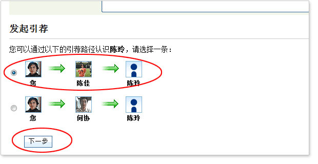

帮助
了解优士网
什么是优士网？
优士网是专门面向中国优秀职业人士，创业者和企业家而建立的商务社交平台，协助他们联络朋友、拓展人脉、交流沟通、发现商机，在职业上取得更大的成功。
为什么优士网就是您的人脉优势？
1. 优士网是您展示职业形象的广阔平台
您在工作和生活中结识新朋友，人们对您的认知来自于您的容貌长相、职业背景、兴趣爱好、言谈话语等。而优士网中，您可以通过个人档案创建一张真实而丰富的个人名片，包括职业经历，教育背景，技能专长，兴趣爱好，性格特点等等，并把这各个方面的信息综合起来，呈现给优士网上数量众多的会员。虽然你们可能彼此并不相识，但是通过您的档案，他们会对您有所了解，对您产生兴趣，您的资料越是丰富、充实，就越会给人留下积极良好的印象，从而提升您的职业形象。
2. 优士网是您建立价值人脉网络的高效渠道
现实生活的交友模式是随机的通过朋友认识朋友，这使您无法清楚地了解您真正拥有的人际网络是多么的大。您或许会与那些可能对您一生有益的朋友失之交臂，或许因为缺乏有效的途径，不能结识那些对您有价值的朋友，而那个人可能就是与您相隔一人的您好友的好友。在优士网中，您则可以深刻体验到您的人际网络远比想象的更强大。您不仅可以清晰地掌握您的人际关系网络，对其进行有效地管理；而且当您人际资源达到一定数量的时候，您将发现自己仅仅邀请了几十朋友在优士网中，但是朋友的总数却可以达到几十万人，这将是您一笔巨大的财富。
3. 优士网是您寻求无限职业机遇的有力工具
现实生活中，您在工作上遇到困难或寻找机会时，很自然地会请朋友帮忙，但这种方式效率并不高。而当您在优士网上搭建起一个真实丰富的人际网络后，完全可以主动地按照您的需求进行探索。利用优士网强大的搜索功能找到亟需的专业人士，结识潜在的合作伙伴，获得更好的工作机会。通过群组内的会员互动，探讨最新资讯，交流观点想法，畅谈发展未来，等等。总之，您越是拥有丰富的人际资源，越是充分挖掘您人际网络的强大潜力，就意味着您比别人拥有更多的商业资源，更容易获得事业的金玉良机。
优士网与其它的交友网站有什么不同？
优士网的会员都是真实的。优士网倡导以真实诚信的态度建立您的人脉网络，营造值得信赖的商业网络社交环境。所有优士网的会员，我们都要求其使用真实的姓名，填写真实完整的个人信息。
优士网是仅限邀请加入的。与众多其他交友网站不同，要成为优士网的新会员，必须收到现有会员的邀请。优士网暂不提供直接注册加入的方式。这既保证了优士网会员的质量，也确保了会员的真实性。
优士网是充分保护隐私的。优士网非常重视网络社交的私密性和安全性，并且充分尊重您的个人隐私需求，将不会向第三方出售任何用户的信息资料，所以您可以放心地填写您的个人信息，您的联系信息将只公开给您的一度人脉。更重要的是，优士网的功能设计也严密地保护了您的隐私，为您提供了丰富的隐私设定选项，使您可以根据您的偏好进行设定与更改。
什么是优士网中的“一度人脉”？
在优士网中，会员之间按关系远近的不同可分为不同的“度”，您的直接朋友就是您的“一度人脉”，而他们的一度人脉将成为您的“二度人脉”，以此类推，您可以有三度、四度人脉关系。为了限制人际关系网络的无意义延伸，在优士网中，您人脉网络范围被限定在三度以内。
您的“一度人脉”同时也是您现实生活中的朋友，这是您拓展人际网络的基础。您的“一度人脉”越多，您的人脉网络内的人际网络人数就越庞大，您可以通过他们为您引荐更多您希望认识的会员
为什么要邀请身边的朋友上优士网？
把生活中的朋友邀请成为优士网会员，他们便是您的“一度人脉”。而他们的直接朋友就将成为您的二度人脉。，您可以更加了解您身边的朋友，更清晰地掌握您的人脉关系网络，更科学地管理您的人际网络资源，更快捷高效地拓展安全可靠的人际网络，使其稳定、有序、无限地增长。当您的人际资源达到一定数量的时候，您将发现自己仅仅邀请了几十朋友在优士网中，但是三度网络中的人脉总数却可以达到几十万人，这将是您一笔巨大的财富。
如何在优士网拓展人脉？
第一步，邀请您的朋友、同事和商务伙伴成为优士网会员，为以后通过引荐认识其他会员打下良好的基础。
第二步，建立真实完整的个人档案，使更多的人能够了解您并与您联系。
第三步，积极主动地进行拓展活动，包括：
- 利用搜索功能找到您感兴趣的人；
- 发送人脉直邮进行联系；
- 通过朋友引荐功能与之建立好友关系等。s
第四步，充分利用优士网提供的沟通工具，更新微博，分享内容、加强与朋友之间的互动，积极参加群组活动。
第五步，积极引荐好友与好友结识，朋友的人脉资源同时也会成为您的资源。
为什么需要登录以后才能进行操作?
优士网的会员均使用真实信息，为了保护会员的隐私，优士网的大部分服务均需登录以后才能使用。
完成注册后为什么不能登陆？
原因一： 可能因为是您没有进行邮箱确认。
当您完成注册步骤后，却不能正常登录优士网，很有可能是您没有对您的注册邮箱进行确认，请您到注册时填写的邮箱中收取确认信，然后点击信内确认连接，就可以成为优士网会员了。
如果您是通过收到的邀请信注册优士网的，您收到邀请信的那个邮箱地址会被自动填写到“登录时使用的邮箱地址”框中，如果您没有更改它，并继续完成了接下来的注册步骤，那么在您完成注册步骤时即成为优士网会员，不需进行以上所说的邮箱确认。
原因二：可能是因为您的注册邮箱或密码输入错误，比如不小心输错了大小写。
忘记登陆密码怎么办？
在优士网登陆首页点击“找回密码”，输入注册邮箱，然后到该邮箱中去查收密码找回的邮件。
如何更改密码？
第一步，登陆优士网后，点击页面右上角“设置->帐户信息设置”，
第二步，找到“更改密码”，
第三步，按提示修改，点击“确认修改”完成。
如何修改邮箱？
登陆优士网后，点击页面右上角“设置->账户信息设置-> 更改邮箱地址”，然后按提示修改邮箱地址。
如何完善我的个人档案？
登录优士网后，点击页面右上角“设置->个人档案设置”，进入个人档案编辑页面，可以对您的“基本信息”、“职业总结”、“工作经历”、“教育经历”、“联系信息”进行完善。
您也可以点击导航栏中的“档案”栏目，以编辑模式查看自己的个人档案，并且针对档案中的内容点击相应的链接进行编辑。
为什么要填写真实完整的个人档案？
优士网是以现实人际关系为基础而建立的商务社交网络。我们倡导以真实诚信的态度建立您的人际网络，我们相信真实而完整地呈现自己，会为您自己和他人提供更多的机会，从而发挥商务社交网络平台的巨大作用。
无论您是创业者，企业家，还是职业人士，如果您填写了真实而完整的档案，也许某一位搜索到您的会员就被您的丰富经历所吸引或者正好想寻找您这样的员工或者想与您所在的公司洽谈合作，那么您的下一个商业机会就轻松向您走来了，这样的成功案例在优士网中不胜枚举！
如果您想与某位陌生会员结识，您可能会请朋友引荐，或者直接向他发出“直邮”，接受请求的会员在收到邀请时都会了解一下发出邀请人的情况。此时，真实而完整的个人档案能为您创造一个非常正面、积极的印象；而如果您的个人档案极其简单，无疑会大大降低您结识陌生会员的成功率。
任何人都可以查看到我的个人档案吗？
不是。在优士网中，个人档案中的信息是有选择性的公开的。比如，您的联系方式只公开给您的“一度人脉”或其中的特定分组；您的完整的个人档案信息只有处于您人脉网络中（3度以内）的会员才能查看，而其他会员只能查看到您档案的摘要信息。
每位优士用户还可以创建一份针对站外用户公开的“公开档案”，公开档案中的内容完全可以根据个人的偏好进行设置，甚至选择关闭公开档案。
如何修改我的隐私设定？
登录优士网后，点击页面右上角“设置->隐私设定”，进入隐私设定页面，就可以根据自己的个人偏好进行修改了。
如何修改我的头像？
登录优士网后， 点击主导航中的“档案”标签，然后点击您档案中的修改链接即可上传或更改您的头像。
如何添加“工作经历”？
“工作经历”是您职业生涯的一份履历，通过它，优士网会员可以获得对您的职业经历的初步了解。根据具体情况，您可以添加若干段不同的工作经历。
登录优士网后，点击主导航中的“档案”标签，然后找到工作经历的部分，点击“添加新的工作经历”链接，即可在相应页面中添加自己的工作经历。
每段工作经历包含必填信息（公司名称、公司网址、公司规模、职位名称、在职时间）和选填信息（工作概述、是否是当前工作）。
请按页面的提示填些真实而完整得工作经历。您也可以对一段已添加的工作经历进行修改或者删除。
如何添加“教育经历”？
“教育经历”是您教育背景的一份概述，通过它，优士网会员可以获得对您的教育经历的初步了解。根据具体情况，您可以添加若干段不同的教育经历。
登录优士网后，点击主导航中的“档案”标签，然后找到教育经历的部分，点击“添加新的教育经历”链接，即可在相应页面中添加自己的教育经历。
每段教育经历包含必填信息（学校名称、专业名称、学位等级、起止时间）和选填信息（教育概述）。请按页面的提示填些真实而完整得工作经历。您也可以对一段已添加的工作经历进行修改或者删除。
如何设置“联系信息”？
登录优士网后，点击主导航中的“档案”标签，然后找到“联系信息”部分，点击“修改”。
或者点击页面右上角“设置->个人档案设置->联系信息”。
联系信息包括手机号码、商务电话、私人电话、电子邮箱、即时通讯账户（如QQ、MSN等）。只有您的一度人脉才可能看到您的联系信息，同时您还可以进一步对每一条联系信息进行隐私设置。
如何对“联系信息”进行隐私设置？
为了进一步保护个人隐私，您可以对每一条联系信息进行隐私设置。
进入设置联系信息的页面后，点击每一条联系信息后方都有下拉选项，您可以根据习惯设置为“公开给一度人脉”、“公开给指定的人脉分组”和“完全不公开”，并可以设置公开给指定人脉分组。
优士网提供怎样的隐私保护？
优士网在联系选项、个人档案、人际动态、群组设定各方面为会员提供了全方位的隐私保护。
目前默认的隐私设置是：其他会员可以搜索到您，向您发送直邮，向您提出引荐请求。您的个人档案像三度人脉公开，联系人列表向一度人脉公开，头像向三度人脉公开。您的公开档案对所有会员可见（包括基本信息和头像）。
登录优士网后，点击页面右上角的“设置->隐私设置”，可以根据自己的习惯修改隐私设置。
如何修改联系选项？
登录优士网后，点击页面右上角的“设置->隐私设置->联系选项”进行修改。
“给对方的联络建议”由您自己填写，供发起邀请人和引荐人参考。
如何修改个人档案的隐私设置？
登录优士网后，点击页面右上角的“设置->隐私设置->个人档案”进行修改。您可以对个人档案的公开范围进行设置，也可以在中选取您希望显示为公开档案的部分。
如何修改人际动态？
登录优士网后，点击页面右上角的“设置->隐私设置->人际动态”进行修改。您可以选择希望在首页看到的人际动态。
如何修改群组设定？
登录优士网后，点击页面右上角的“设置->隐私设置->群组设定”进行修改。您可以对每个群组的隐私分别设定。
如何邀请朋友加入优士网？
成为优士网会员后，想迅速扩大您的人际网络，邀请朋友加入是第一步。
登录优士网后，点击页面右上角“发邀请”，您会看到以下五种邀请朋友的方式：
- 直接发送邀请链接给朋友――优士网为每位会员提供了一个唯一的邀请链接，您可以通过MSN、QQ、雅虎通等即时通讯工具或其他方式将这一链接发送给您的朋友。您的朋友只需点击连接就OK了!
- 直接发送邀请链接给朋友――逐个输入朋友姓名和邮箱地址，优士网会向这些朋友发出邀请信，您的朋友只需查收确认就OK了！
- 导入邮箱通讯录至邀请名单――输入您的邮箱地址和密码，优士网会自动导入邮箱通讯录至邀请名单。如果邮箱通讯录中的朋友已经是优士网会员，您可以选择把他加为一度人脉。然后系统会列出其他朋友供您选择，优士网自动向您选择的朋友发送邀请信，您的朋友只需查收确认就OK了！
- 导入MSN联系人至邀请名单――输入您的MSN账号和密码，优士网会自动导入MSN联系人至邀请名单。如果联系人中的朋友已经是优士网会员，您可以选择把他加为一度人脉。然后系统会列出其他朋友供您选择，优士网自动向您选择的朋友发送邀请信，您的朋友只需查收确认就OK了！
- 导入邮件客户端的地址簿至邀请名单――按页面提示从Outlook、Foxmail等邮件客户端中导出CSV、VCF文件，保存在一个确定的路径，然后把CSV、VCF文件导入优士网。如果地址簿中的朋友已经是优士网会员，您可以选择把他加为一度人脉。然后系统会列出其他朋友供您选择，优士网自动向您选择的朋友发送邀请信，您的朋友只需查收确认就OK了！
如何查看朋友接受邀请的情况？
登录优士网后，点击页面右上角“发邀请->查看邀请记录”，可以查看朋友是否已经阅读或者接受邀请。
如何用搜索功能找到人脉？
优士网提供了强大的搜索功能，帮助您准确而便捷地找到需要的人脉。
优士网页面上方包含快速搜索框，输入您要搜索的关键词，如：姓名（可以是拼音）、职位、公司名称、学校或专业名称、职业描述等）。
高级搜索包含了所在地、行业、所在群组、联络目的、和搜索范围。您可以通过输入这些条件进行更加精确搜索。
我可以发布什么？
您可以更新动态，与其他会员分享网址和文件，并可以对其进行评论。
我可以看到什么？
在您首页人脉动态区域的“精选”标签下，您可以看到以下内容：
- 一度人脉的微博更新、职业变更、社区动向和人脉动向；
- 关注好友的微博更新
- 您所加入群组内的最新内容、讨论主题和活动等。
您可以通过修改人际动态设置显示的内容。
如何创建自己的群组？
为了保证群组的质量，创建群组的功能尚未对所有优士网会员开放。如果您希望创建按一个群组，请向我们提出申请。
如果您的申请通过获得通过，登陆优士网并点击“群组->创建群组”，按要求填写群组的相关内容及设置（包括群组名称、群组简介、群组标题图、群组类型、加入方式等），即可完成群组的创建。您将自动成为该群组的管理员。
如何加入一个群组？
如果您想加入一个开放群组，只需点击群组名称下方的“加入”，填写您希望加入的理由并提交，待群组管理员批准后即成为该群组成员。
如果想加入需经邀请才能加入的群组，您只能在收到群组成员的邀请后方能加入。
如何退出一个群组？
进入您要退出的群组首页，点击“退出群组”。
如何邀请朋友加入群组？
进入您希望邀请朋友加入的群组首页，点击“邀请新成员”。
您可以从现有一度人脉中选择被邀请人（一次最多邀请20个），编辑邀请信内容，点击发送邀请。
如果您要向优士网站外好友发出邀请，点击“邀请站外好友”。这里有两种方式供您选择：
方式一：复制系统给出的连接，通过QQ、MSN等方式发送给您的好友。
方式二：输入好友的邮件地址，编辑邀请信内容，通过电子邮件发送。
我可以在群组里做什么？
您可以查看群组内的最新动态，发布您的动态和分享，发起话题并参与讨论，发起和参加群组内的活动、查看群组内成员列表。
什么是直邮？
直邮是优士网中最直接、最有效的联络方式。您希望与某一位会员取得联系，便可以向其发送直邮，优士网会将您发送的直邮同时送达对方的有效邮箱中，从而保证被对方会员看到。
通常只有在一度人脉之间才可以相互发送直邮，如果收件人不是您的一度人脉，优士网提供给您通过支付人脉币和会员升级的方式向非一度人脉发送直邮。
如何发送直邮？
登陆优士网后，点击“直邮->撰写新直邮”。或者先进入收件人的会员首页，点击“发送直邮”。
为什么无法发送直邮？
原因一：收件人不是您的一度人脉。直邮是一度人脉之间相互联系的最直接渠道，通常只有一度人脉之间才可以发送人脉直邮。如果收件人不是您的一度人脉，您可以通过支付人脉币或用户升级向非一度用户发送直邮。
原因二：对方设置了拒绝接受。收件人可能设置了不接受非一度人脉的直邮请求，您就无法向他发送直邮。
原因三：账户余额不足。在您的账户中优士币余额不足的时候，需要充值后才能发送直邮。
如何查看发送/接收的直邮？
登陆优士网后，点击“直邮->已收到的直邮/已发出的直邮”，查看和管理您的直邮。
如何把站内会员加为一度人脉？
点击该会员首页右上方的“加为好友”。
选择或输入添加好友的理由。理由必须是“同学”、“同事”、“商业合作”或“直接输入对方邮箱地址”中的一种。如果您选择其他的工作经历或教育经历，必须完善这段经历，并且被添加到您的个人档案中。
发出的好友邀请被对方确认后，您们即成为一度人脉。
如何使用优士网的引荐功能？
您与您人际网络中的2/3度人脉，可以通过朋友引荐功能成为一度人脉。您发出的引荐请求会通过人脉网络进行传递，最终到被请求的会员，如果被接受，您们即可以成为一度人脉，如果引荐请求传递途中任何一个会员拒绝传递或被请求会员拒绝接受，则引荐请求失败。
第一步，进入被请求会员的首页，点击右上方“朋友引荐”，
第二步，系统会列出传递引荐的所有可能路径，选取一条您认为最可能成功的路径，点击“下一步”，

第三步，选择联络类型，并编辑您的请求信。您可以参考被请求人感兴趣的联络类型填写，以提高成功率。选择“共享联系方式”，并给您的一度人脉留言，说明传递引荐的请求，点击“发起引荐请求”，完成操作。
如何使用优士网的关注功能？
一度人脉的人际动态会自动在您首页的人脉动态区域更新，但如果一位会员不是您的一度人脉，您也可以关注他的人际动态。
在这位会员的首页的右上方，点击“加为关注”，这位会员的微博更新和群组活动等人际动态信息就可以自动显示在您首页的人际动态区域。
想要查看您的关注列表，点击首页的“人脉->关注列表”。您可以查看“谁关注了我”和“我关注了谁”，并且取消对某一个会员的关注。
如何使用优士网的备忘功能？
您在使用优士网的过程中可能会需要把某一会员的情况记录下来，并且对您进行提醒，比如：您如何认识了这个会员，或者您未来要联系他，等等。这些都可以使用备忘功能来完成。
在其他会员首页右边栏的上方，有一个备忘框，您可以输入想要记录的情况。
点击首页的“人脉->我的备忘”，您还可以查看您的备忘列表，这里包含了所有您曾经记录的备忘信息。
什么是优士币？
优士币是优士网内唯一流通的虚拟货币。
优士币有什么用途？
优士币主要用来给一度人脉以外的其他会员发送“直邮”，发起一次直邮请求需要支付10枚优士币。
直邮是优士网中最直接、最有效的联络方式，可以将您发送的消息直接送达对方的有效邮箱中。通过直邮，您可以与优士网中的绝大多数会员取得联系。
优士币的定价是？
优士币与人民币等值，1元=1枚优士币
如何获取优士币?
目前您可以通过以下两种方式获取优士币：
新加入优士网的会员可以通过完善个人资料和邀请其他会员来获得一定初始数量的优士币。
您可以在“优士币充值”栏目中通过在线银行或支付宝的方式来购买优士币，今后我们还将提供更多方便的支付方式。
付费会员与普通会员有什么不同？
普通会员加入和使用优士网服务是完全免费的。
在普通会员享有的基本功能之外，优士网向付费会员提供了一系列升级服务，帮助您更便捷，更有效地联系沟通，拓展人脉，您可以根据需要选择升级的种类和方式。
付费用户享有以下升级服务:
- 发送人脉直邮
您无需再等待朋友引荐，而可以直接联系您的目标会员；据有效数据统计，30%的几率他将查看并回复您的人脉直邮。 - 无限引荐
多管齐下，同时发动您的多个朋友把您介绍给他；据有效数据统计，70%的几率通过引荐他将接受您的邀请，成为您的一度人脉。 - 无限群组
行业，学校，公司，兴趣爱好，您可以自由选择并加入各种群组，迅速有效的拓展您的人脉。
如何升级我的账户？
登陆优士网后，点击页面右上角“设置->账户信息设置”，然后点击“升级账户”。您可以根据需要选择升级的种类（白金会员或钻石会员）和时间（月度会员或年度会员），完成费用支付后，就可享受付费用户的全新体验了。